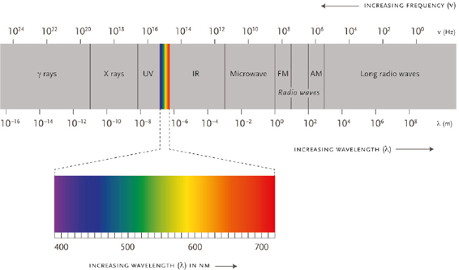
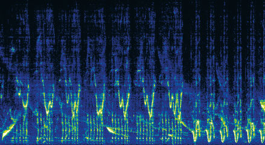
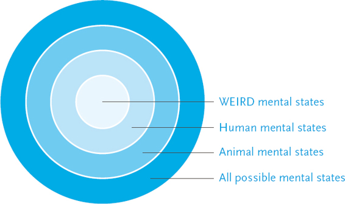

The new religions are unlikely to emerge from the caves of Afghanistan or from the madrasas of the Middle East. Rather, they will emerge from research laboratories. Just as socialism took over the world by promising salvation through steam and electricity, so in the coming decades new techno-religions may conquer the world by promising salvation through algorithms and genes.
Despite all the talk of radical Islam and Christian fundamentalism, the most interesting place in the world from a religious perspective is not the Islamic State or the Bible Belt, but Silicon Valley. That’s where hi-tech gurus are brewing for us brave new religions that have little to do with God, and everything to do with technology. They promise all the old prizes – happiness, peace, prosperity and even eternal life – but here on earth with the help of technology, rather than after death with the help of celestial beings.
These new techno-religions can be divided into two main types: techno-humanism and data religion. Data religion argues that humans have completed their cosmic task, and they should now pass the torch on to entirely new kinds of entities. We will discuss the dreams and nightmares of data religion in the next chapter. This chapter is dedicated to the more conservative creed of techno-humanism, which still sees humans as the apex of creation and clings to many traditional humanist values. Techno-humanism agrees that Homo sapiens as we know it has run its historical course and will no longer be relevant in the future, but concludes that we should therefore use technology in order to create Homo deus – a much superior human model. Homo deus will retain some essential human features, but will also enjoy upgraded physical and mental abilities that will enable it to hold its own even against the most sophisticated non-conscious algorithms. Since intelligence is decoupling from consciousness, and since non-conscious intelligence is developing at breakneck speed, humans must actively upgrade their minds if they want to stay in the game.
Seventy thousand years ago the Cognitive Revolution transformed the Sapiens mind, thereby turning an insignificant African ape into the ruler of the world. The improved Sapiens minds suddenly had access to the vast intersubjective realm, which enabled us to create gods and corporations, to build cities and empires, to invent writing and money, and eventually to split the atom and reach the moon. As far as we know, this earth-shattering revolution resulted from a few small changes in the Sapiens DNA, and a slight rewiring of the Sapiens brain. If so, says techno-humanism, maybe a few additional changes to our genome and another rewiring of our brain will suffice for launching a second cognitive revolution. The mental renovations of the first Cognitive Revolution gave Homo sapiens access to the intersubjective realm and turned us into the rulers of the planet; a second cognitive revolution might give Homo deus access to unimaginable new realms and turn us into the lords of the galaxy.
This idea is an updated variant on the old dreams of evolutionary humanism, which already a century ago called for the creation of superhumans. However, whereas Hitler and his ilk planned to create superhumans by means of selective breeding and ethnic cleansing, twenty-first-century techno-humanism hopes to reach the goal far more peacefully, with the help of genetic engineering, nanotechnology and brain–computer interfaces.
Gap the Mind
Techno-humanism seeks to upgrade the human mind and give us access to unknown experiences and unfamiliar states of consciousness. However, revamping the human mind is an extremely complex and dangerous undertaking. As we saw in Chapter 3, we don’t really understand the mind. We don’t know how minds emerge, or what their function is. Through trial and error we learn how to engineer mental states, but we seldom comprehend the full implications of such manipulations. Worse yet, since we are unfamiliar with the full spectrum of mental states, we don’t know what mental aims to set ourselves.
We are akin to the inhabitants of a small isolated island who have just invented the first boat, and are about to set sail without a map or even a destination. Indeed, we are in a somewhat worse condition. The inhabitants of our imaginary island at least know that they occupy just a small space within a large and mysterious sea. We fail to appreciate that we are living on a tiny island of consciousness within a giant ocean of alien mental states.
Just as the spectrums of light and sound are far larger than what we humans can see and hear, so the spectrum of mental states is far larger than what the average human is aware of. We can see light in wavelengths of between 400 and 700 nanometres only. Above this small principality of human vision extend the unseen but vast realms of infrared, microwaves and radio waves, and below it lie the dark kingdoms of ultraviolet, X-rays and gamma rays. Similarly, the spectrum of possible mental states may be infinite, but science has studied only two tiny sections of it: the sub-normative and the WEIRD.
For more than a century psychologists and biologists have conducted extensive research on people suffering from various psychiatric disorders and mental diseases. Consequently, today we have a very detailed (though far from perfect) map of the sub-normative mental spectrum. Simultaneously, scientists have studied the mental states of people considered to be healthy and normative. However, most scientific research about the human mind and the human experience has been conducted on people from Western, educated, industrialised, rich and democratic (WEIRD) societies, who do not constitute a representative sample of humanity. The study of the human mind has so far assumed that Homo sapiens is Homer Simpson.
In a groundbreaking 2010 study, Joseph Henrich, Steven J. Heine and Ara Norenzayan systematically surveyed all the papers published between 2003 and 2007 in leading scientific journals belonging to six different subfields of psychology. The study found that though the papers often make broad claims about the human mind, most of them base their findings on exclusively WEIRD samples. For example, in papers published in the Journal of Personality and Social Psychology – arguably the most important journal in the subfield of social psychology – 96 per cent of the sampled individuals were WEIRD, and 68 per cent were Americans. Moreover, 67 per cent of American subjects and 80 per cent of non-American subjects were psychology students! In other words, more than two-thirds of the individuals sampled for papers published in this prestigious journal were psychology students in Western universities. Henrich, Heine and Norenzayan half-jokingly suggested that the journal change its name to the Journal of Personality and Social Psychology of American Psychology Students.1

Humans can see only a minuscule part of the electromagnetic spectrum. The spectrum in its entirety is about 10 trillion times larger than that of visible light. Might the mental spectrum be equally vast?
‘EM spectrum’. Licensed under CC BY-SA 3.0 via Commons, https://commons.wikimedia.org/wiki/File:EM_spectrum.svg#/media/File:EM_spectrum.svg.
Psychology students star in many of the studies because their professors oblige them to take part in experiments. If I am a psychology professor at Harvard it is much easier for me to conduct experiments on my own students than on the residents of a crime-ridden New York slum – not to mention travelling to Namibia and conducting experiments on hunter-gatherers in the Kalahari Desert. However, it may well be that New York slum-dwellers and Kalahari hunter-gatherers experience mental states which we will never discover by forcing Harvard psychology students to answer long questionnaires or stick their heads into fMRI scanners.
Even if we travel all over the globe and study each and every community, we would still cover only a limited part of the Sapiens mental spectrum. Nowadays, all humans have been touched by modernity, and we are all members of a single global village. Though Kalahari foragers are somewhat less modern than Harvard psychology students, they are not a time capsule from our distant past. They too have been influenced by Christian missionaries, European traders, wealthy eco-tourists and inquisitive anthropologists (the joke is that in the Kalahari Desert, the typical hunter-gatherer band consists of twenty hunters, twenty gatherers and fifty anthropologists).
Before the emergence of the global village, the planet was a galaxy of isolated human cultures, which might have fostered mental states that are now extinct. Different socio-economic realities and daily routines nurtured different states of consciousness. Who could gauge the minds of Stone Age mammoth-hunters, Neolithic farmers or Kamakura samurais? Moreover, many pre-modern cultures believed in the existence of superior states of consciousness, which people might access using meditation, drugs or rituals. Shamans, monks and ascetics systematically explored the mysterious lands of mind, and came back laden with breathtaking stories. They told of unfamiliar states of supreme tranquillity, extreme sharpness and matchless sensitivity. They told of the mind expanding to infinity or dissolving into emptiness.
The humanist revolution caused modern Western culture to lose faith and interest in superior mental states, and to sanctify the mundane experiences of the average Joe. Modern Western culture is therefore unique in lacking a special class of people who seek to experience extraordinary mental states. It believes anyone attempting to do so is a drug addict, mental patient or charlatan. Consequently, though we have a detailed map of the mental landscape of Harvard psychology students, we know far less about the mental landscapes of Native American shamans, Buddhist monks or Sufi mystics.2
And that is just the Sapiens mind. Fifty thousand years ago, we shared this planet with our Neanderthal cousins. They didn’t launch spaceships, build pyramids or establish empires. They obviously had very different mental abilities, and lacked many of our talents. Nevertheless, they had bigger brains than us Sapiens. What exactly did they do with all those neurons? We have absolutely no idea. But they might well have had many mental states that no Sapiens had ever experienced.
Yet even if we take into account all human species that ever existed, that would still not exhaust the mental spectrum. Other animals probably have experiences that we humans can barely imagine. Bats, for example, experience the world through echolocation. They emit a very rapid stream of high-frequency calls, well beyond the range of the human ear. They then detect and interpret the returning echoes to build a picture of the world. That picture is so detailed and accurate that the bats can fly quickly between trees and buildings, chase and capture moths and mosquitoes, and all the time evade owls and other predators.
The bats live in a world of echoes. Just as in the human world every object has a characteristic shape and colour, so in the bat world every object has its echo-pattern. A bat can tell the difference between a tasty moth species and a poisonous moth species by the different echoes returning from their slender wings. Some edible moth species try to protect themselves by evolving an echo-pattern similar to that of a poisonous species. Other moths have evolved an even more remarkable ability to deflect the waves of the bat radar, so that like stealth bombers they fly around without the bat knowing they are there. The world of echolocation is as complex and stormy as our familiar world of sound and sight, but we are completely oblivious to it.
One of the most important articles about the philosophy of mind is titled ‘What Is It Like to Be a Bat?’3 In this 1974 article, the philosopher Thomas Nagel points out that a Sapiens mind cannot fathom the subjective world of a bat. We can write all the algorithms we want about the bat body, about bat echolocation systems and about bat neurons, but it won’t tell us how it feels to be a bat. How does it feel to echolocate a moth flapping its wings? Is it similar to seeing it, or is it something completely different?
Trying to explain to a Sapiens how it feels to echolocate a butterfly is probably as pointless as explaining to a blind mole how it feels to see a Caravaggio. It’s likely that bat emotions are also deeply influenced by the centrality of their echolocation sense. For Sapiens, love is red, envy is green and depression is blue. Who knows what echolocations colour the love of a female bat to her offspring, or the feelings of a male bat towards his rivals?
Bats aren’t special, of course. They are but one out of countless possible examples. Just as Sapiens cannot understand what it’s like to be a bat, we have similar difficulties understanding how it feels to be a whale, a tiger or a pelican. It certainly feels like something; but we don’t know like what. Both whales and humans process emotions in a part of the brain called the limbic system, yet the whale limbic system contains an entire additional part which is missing from the human structure. Maybe that part enables whales to experience extremely deep and complex emotions which are alien to us? Whales might also have astounding musical experiences which even Bach and Mozart couldn’t grasp. Whales can hear one another from hundreds of kilometres away, and each whale has a repertoire of characteristic ‘songs’ that may last for hours and follow very intricate patterns. Every now and then a whale composes a new hit, which other whales throughout the ocean adopt. Scientists routinely record these hits and analyse them with the help of computers, but can any human fathom these musical experiences and tell the difference between a whale Beethoven and a whale Justin Bieber?4

A spectrogram of a bowhead whale song. How does a whale experience this song? The Voyager record included a whale song in addition to Beethoven, Bach and Chuck Berry. We can only hope it is a good one.
© Cornell Bioacoustics Research Program at the Lab of Ornithology.
None of this should surprise us. Sapiens don’t rule the world because they have deeper emotions or more complex musical experiences than other animals. So we may be inferior to whales, bats, tigers and pelicans at least in some emotional and experiential domains.
Beyond the mental spectrum of humans, bats, whales and all other animals, even vaster and stranger continents may lie in wait. In all probability, there is an infinite variety of mental states that no Sapiens, bat or dinosaur ever experienced in 4 billion years of terrestrial evolution, because they did not have the necessary faculties. In the future, however, powerful drugs, genetic engineering, electronic helmets and direct brain–computer interfaces may open passages to these places. Just as Columbus and Magellan sailed beyond the horizon to explore new islands and unknown continents, so we may one day set sail towards the antipodes of the mind.

The spectrum of consciousness.
I Smell Fear
As long as doctors, engineers and customers focused on healing mental diseases and enjoying life in WEIRD societies, the study of subnormal mental states and WEIRD minds was perhaps sufficient to our needs. Though normative psychology is often accused of mistreating any divergence from the norm, in the last century it has brought relief to countless people, saving the lives and sanity of millions.
However, at the beginning of the third millennium we face a completely different kind of challenge, as liberal humanism makes way for techno-humanism, and medicine is increasingly focused on upgrading the healthy rather than healing the sick. Doctors, engineers and customers no longer want merely to fix mental problems – they seek to upgrade the mind. We are acquiring the technical abilities to begin manufacturing new states of consciousness, yet we lack a map of these potential new territories. Since we are familiar mainly with the normative and sub-normative mental spectrum of WEIRD people, we don’t even know what destinations to aim towards.
Not surprisingly, then, positive psychology has become the trendiest subfield of the discipline. In the 1990s leading experts such as Martin Seligman, Ed Dinner and Mihaly Csikszentmihalyi argued that psychology should study not just mental illnesses, but also mental strengths. How come we have a remarkably detailed atlas of the sick mind, but have no scientific map of the prosperous mind? Over the last two decades, positive psychology has made important first steps in the study of super-normative mental states, but as of 2016, the super-normative zone is largely terra incognita to science.
Under such circumstances, we might rush forward without any map, and focus on upgrading those mental abilities that the current economic and political system needs, while neglecting and even downgrading other abilities. Of course, this is not a completely new phenomenon. For thousands of years the system has been shaping and reshaping our minds according to its needs. Sapiens originally evolved as members of small intimate communities, and their mental faculties were not adapted to living as cogs within a giant machine. However, with the rise of cities, kingdoms and empires, the system cultivated capacities required for large-scale cooperation, while disregarding other skills and talents.
For example, archaic humans probably made extensive use of their sense of smell. Hunter-gatherers are able to smell from a distance the difference between various animal species, various humans and even various emotions. Fear, for example, smells different to courage. When a man is afraid he secretes different chemicals compared to when he is full of courage. If you sat among an archaic band debating whether to start a war against a neighbouring band, you could literary smell public opinion.
As Sapiens organised themselves in larger groups, our nose lost its importance, because it is useful only when dealing with small numbers of individuals. You cannot, for example, smell the American fear of China. Consequently, human olfactory powers were neglected. Brain areas that tens of thousands of years ago probably dealt with odours were put to work on more urgent tasks such as reading, mathematics and abstract reasoning. The system prefers that our neurons solve differential equations rather than smell our neighbours.5
The same thing happened to our other senses, and to the underlying ability to pay attention to our sensations. Ancient foragers were always sharp and attentive. Wandering in the forest in search of mushrooms, they sniffed the wind carefully and watched the ground intently. When they found a mushroom, they ate it with the utmost attention, aware of every little nuance of flavour, which could distinguish an edible mushroom from its poisonous cousin. Members of today’s affluent societies don’t need such keen awareness. We can go to the supermarket and buy any of a thousand different dishes, all supervised by the health authorities. But whatever we choose – Italian pizza or Thai noodles – we are likely to eat it in haste in front of the TV, hardly paying attention to the taste (which is why food producers are constantly inventing new exciting flavours, which might somehow pierce the curtain of indifference). Similarly, when going on holiday we can choose between thousands of amazing destinations. But wherever we go, we are likely to be playing with our smartphone instead of really seeing the place. We have more choice than ever before, but no matter what we choose, we have lost the ability to really pay attention to it.6
In addition to smelling and paying attention, we have also been losing our ability to dream. Many cultures believed that what people see and do in their dreams is no less important than what they see and do while awake. Hence people actively developed their ability to dream, to remember dreams and even to control their actions in the dream world, which is known as ‘lucid dreaming’. Experts in lucid dreaming could move about the dream world at will, and claimed they could even travel to higher planes of existence or meet visitors from other worlds. The modern world, in contrast, dismisses dreams as subconscious messages at best, and mental garbage at worst. Consequently, dreams play a much smaller part in our lives, few people actively develop their dreaming skills, and many people claim that they don’t dream at all, or that they cannot remember any of their dreams.7
Did the decline in our capacity to smell, to pay attention and to dream make our lives poorer and greyer? Maybe. But even if it did, for the economic and political system it was worth it. Mathematical skills are more important to the economy than smelling flowers or dreaming about fairies. For similar reasons, it is likely that future upgrades to the human mind will reflect political needs and market forces.
For example, the US army’s ‘attention helmet’ is meant to help people focus on well-defined tasks and speed up their decision-making process. It may, however, reduce their ability to show empathy and tolerate doubts and inner conflicts. Humanist psychologists have pointed out that people in distress often don’t want a quick fix – they want somebody to listen to them and sympathise with their fears and misgivings. Suppose you are having an ongoing crisis in your workplace, because your new boss doesn’t appreciate your views, and insists on doing everything her way. After one particularly unhappy day, you pick up the phone and call a friend. But the friend has little time and energy for you, so he cuts you short, and tries to solve your problem: ‘Okay. I get it. Well, you really have just two options here: either quit the job, or stay and do what the boss wants. And if I were you, I would quit.’ That would hardly help. A really good friend will have patience, and will not be quick to find a solution. He will listen to your distress, and will provide time and space for all your contradictory emotions and gnawing anxieties to surface.
The attention helmet works a bit like the impatient friend. Of course sometimes – on the battlefield, for instance – people need to take firm decisions quickly. But there is more to life than that. If we start using the attention helmet in more and more situations, we may end up losing our ability to tolerate confusion, doubts and contradictions, just as we have lost our ability to smell, dream and pay attention. The system may push us in that direction, because it usually rewards us for the decisions we make rather than for our doubts. Yet a life of resolute decisions and quick fixes may be poorer and shallower than one of doubts and contradictions.
When you mix a practical ability to engineer minds with our ignorance of the mental spectrum and with the narrow interests of governments, armies and corporations, you get a recipe for trouble. We may successfully upgrade our bodies and our brains, while losing our minds in the process. Indeed, techno-humanism may end up downgrading humans. The system may prefer downgraded humans not because they would possess any superhuman knacks, but because they would lack some really disturbing human qualities that hamper the system and slow it down. As any farmer knows, it’s usually the brightest goat in the herd that stirs up the greatest trouble, which is why the Agricultural Revolution involved downgrading animal mental abilities. The second cognitive revolution dreamed up by techno-humanists might do the same to us.
The Nail on Which the Universe Hangs
Techno-humanism faces another dire threat. Like all humanist sects, techno-humanism too sanctifies the human will, seeing it as the nail on which the entire universe hangs. Techno-humanism expects our desires to choose which mental abilities to develop, and to thereby determine the shape of future minds. Yet what would happen once technological progress makes it possible to reshape and engineer our desires themselves?
Humanism always emphasised that it is not easy to identify our authentic will. When we try to listen to ourselves, we are often flooded by a cacophony of conflicting noises. Indeed, we sometimes don’t really want to hear our authentic voice, because it can disclose unwelcome secrets and make uncomfortable requests. Many people take great care not to probe themselves too deeply. A successful lawyer on the fast track may stifle an inner voice telling her to take a break and have a child. A woman trapped in a dissatisfying marriage fears losing the security it provides. A guilt-ridden soldier is stalked by nightmares about atrocities he committed. A young man unsure of his sexuality follows a personal ‘don’t ask, don’t tell’ policy. Humanism doesn’t think any of these situations has an obvious one-size-fits-all solution. But humanism demands that we show some guts, listen to the inner messages even if they scare us, identify our authentic voice and then follow its instructions regardless of the difficulties.
Technological progress has a very different agenda. It doesn’t want to listen to our inner voices. It wants to control them. Once we understand the biochemical system producing all these voices, we can play with the switches, turn up the volume here, lower it there, and make life much more easy and comfortable. We’ll give Ritalin to the distracted lawyer, Prozac to the guilty soldier and Cipralex to the dissatisfied wife. And that’s just the beginning.
Humanists are often appalled by this approach, but we had better not pass judgement on it too quickly. The humanist recommendation to listen to ourselves has ruined the lives of many a person, whereas the right dosage of the right chemical has greatly improved the well-being and relationships of millions. In order to really listen to themselves, some people must first turn down the volume of the inner screams and diatribes. According to modern psychiatry, many ‘inner voices’ and ‘authentic wishes’ are nothing more than the product of biochemical imbalances and neurological diseases. People suffering from clinical depression repeatedly walk out on promising careers and healthy relationships because some biochemical glitch makes them see everything through dark-coloured lenses. Instead of listening to such destructive inner voices, it might be a good idea to shut them up. When Sally Adee used the attention helmet to silence the voices in her head, she not only became an expert markswoman, but she also felt much better about herself.
Personally, you may have many different views about these issues. Yet from a historical perspective it is clear that something momentous is happening. The number one humanist commandment – listen to yourself! – is no longer self-evident. As we learn to turn our inner volume up and down, we give up our belief in authenticity, because it is no longer clear whose hand is on the switch. Silencing annoying noises inside your head seems like a wonderful idea, provided it enables you to finally hear your deep authentic self. But if there is no authentic self, how do you decide which voices to silence and which to amplify?
Let’s assume, just for the sake of argument, that within a few decades brain scientists will give us easy and accurate control over many inner voices. Imagine a young gay man from a devout Mormon family, who after years of living in the closet has finally accumulated enough money to finance a passion operation. He goes to the clinic armed with $100,000, determined to walk out of it as straight as Joseph Smith. Standing in front of the clinic’s door, he mentally repeats what he is going to say to the doctor: ‘Doc, here’s $100,000. Please fix me so that I will never want men again.’ He then rings the bell, and the door is opened by a real-life George Clooney. ‘Doc,’ mumbles the overwhelmed lad, ‘here’s $100,000. Please fix me so that I will never want to be straight again.’
Did the young man’s authentic self win over the religious brainwashing he underwent? Or perhaps a moment’s temptation caused him to betray himself? And perhaps there is simply no such thing as an authentic self that you can follow or betray? Once people could design and redesign their will, we could no longer see it as the ultimate source of all meaning and authority. For no matter what our will says, we can always make it say something else.
According to humanism, only human desires imbue the world with meaning. Yet if we could choose our desires, on what basis could we possibly make such choices? Suppose Romeo and Juliet opened with Romeo having to decide with whom to fall in love. And suppose even after making a decision, Romeo could always retract and make a different choice instead. What kind of play would it have been? Well, that’s the play technological progress is trying to produce for us. When our desires make us uncomfortable, technology promises to bail us out. When the nail on which the entire universe hangs is pegged in a problematic spot, technology would pull it out and stick it somewhere else. But where exactly? If I could peg that nail anywhere in the cosmos, where should I peg it, and why there of all places?
Humanist dramas unfold when people have uncomfortable desires. For example, it is extremely uncomfortable when Romeo of the house of Montague falls in love with Juliet of the house of Capulet, because the Montagues and Capulets are bitter enemies. The technological solution to such dramas is to make sure we never have uncomfortable desires. How much pain and sorrow would have been avoided if instead of drinking poison, Romeo and Juliet could just take a pill or wear a helmet that would have redirected their star-crossed love towards other people.
Techno-humanism faces an impossible dilemma here. It considers the human will to be the most important thing in the universe, hence it pushes humankind to develop technologies that can control and redesign our will. After all, it’s tempting to gain control over the most important thing in the world. Yet once we have such control, techno-humanism would not know what to do with it, because the sacred human will would become just another designer product. We can never deal with such technologies as long as we believe that the human will and the human experience are the supreme source of authority and meaning.
Hence a bolder techno-religion seeks to sever the humanist umbilical cord altogether. It foresees a world which does not revolve around the desires and experiences of any humanlike beings. What might replace desires and experiences as the source of all meaning and authority? As of 2016, only one candidate is sitting in history’s reception room waiting for the job interview. This candidate is information. The most interesting emerging religion is Dataism, which venerates neither gods nor man – it worships data.